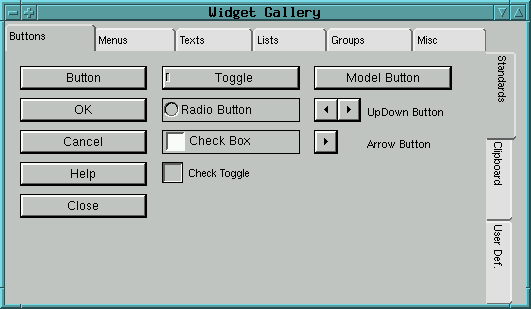
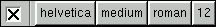
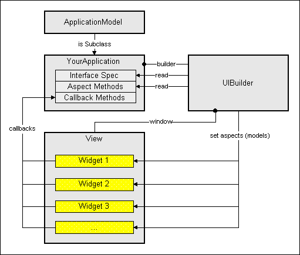

While editing an interface, the GUI Painter holds all attribute values
of the application window and their containing widgets. This collection
of attribute values fully represents a definition of the window application
and is called window specification or window spec for short.
Window specs are stored in the application by generating a method,
which when invoked, returns the spec as a literalArray.
That method is typically called "windowSpec" and found in the
"interface specs" category.
A literalArray is an array object from which the original (spec-) object can be
reconstructed. Structure-wise, literalArrays are very similar to XML.
However, in contrast to XML, they are not text-based, but an array
of symbolic, numeric and string constants (i.e. literals).
As such, they are much easier (and faster) to parse and process than XML would be.
When the application is started, a windowBuilder reads that specification and
creates a hierarchy of widgets as specified therein.
Notice, that the application can already be started and tested while being constructed in the UI-Painter - even if the application's specification or code are only incompletely defined. Typically, widget placement and programming of behavior are done incrementally and interleaved while a GUI application is being developed. At any time during the edit process, it is possible to see what has been defined so far by simply clicking on the start-application icon in the UI-Painter.
As the windowSpec remains part of the application and provides all required information for the UI-Painter, interfaces can be re-edited and modified at any time later, by openig an UI-Painter on a window spec. (double-click on a window-spec-method in the browser).
The format of the ST/X's window
specification are designed to be upward compatible from VisualWorks
* - this means that existing window specifications should work in the
ST/X environment. (We depend on user feedback through verbal descriptions
or existing specifications to validate and maintain this upward compatibility
- you are welcome to send a note or your window resource methods for validation,
when encountering incompatible specifications... .) Since ST/X's
views contain more attributes, their specifications may or may not be backward
compatible.
* VisualWorks is a trademark of ObjectShare, Inc.

The canvas window (here with grid enabled) for assembling your widgets.

The gallery window containing widgets to be dragged into the canvas

The window for controlling the widgets, geometry and attributes
Window spec methods can also be useful outside the
ApplicationModel hierarchy.
This is useful for example, to open a constructed dialog or popupMenu.
However, in this case, the builder must be provided with additional
aspect-binding information (typically provided in a dictionary).
Examples for this kind of use can be found by searching for senders of
openFor:interfaceSpec:withBindings:
openDialogInterface:withBindings:
When your application is opened, it fetches this specification (by sending
"self windowSpec", and passes the spec to its window-builder.
The builder recursively walks throughout the definition,
and creates corresponding widgets on the fly.
As widgets are built, named widgets are placed into a dictionary,
and can later be accessed by the application via
self builder componentAt:nameOfTheComponent
For portability ST/X does not use native widgets of the underlying operating system. Most of a widget's appearance is read from a so called style sheet, which is a textfile found in the "libview/styles" subdirectory. You are free to design your own user interface by copying an existing style-file and modifying it as appropriate. For more details see chapter "Changing the view style appearance" in the "Configuration & Customization"-document. Some visual attributes of the widgets (font style, colors, borders) can also be defined individually in the GUI Painter.
| Button Widgets | Menu Widgets | Text Widgets | List & Tree Widgets |
Grouping Widgets | Geometric | Misc Widgets |
|---|---|---|---|---|---|---|
| Button | Tool Bar | Label | List | Box | Arc | Arbitr. Component |
| Model Button | PopUp List | Entry Field | Table | Framed Box | Rectangle | SubSpecification |
| Arrow Button | Combo List | Text Editor | Tree List | Horizontal Panel | Arrow | SubCanvas |
| Radio Button | Combo Box | HTML Browser | File Tree List | Vertical Panel | Polygon | Slider |
| UpDown Button | Ext. ComboBox | New List/Tree | Area Panel | Image | Thumb Wheel | |
| Toggle | Tab Header | Var. Horiz. Panel | Progress Indicator | |||
| Check Box | Note Book | Var. Vert. Panel | Separator | |||
| Check Toggle | Gallery | Region | ||||
| Application Window (canvas) |
Besides the individual attributes of the widgets there are some common attributes:
self builder componentAt:aKey
Do not worry about the names of the view and specification classes of the widgets. The class naming has historical reasons (for portability to VW). To avoid using 'complicated' names for the widgets, user friendly names are used in this documentation and within the UIPainter.

It offers a palette of common styles.
This palette can be modified in the class FontMenu.
After selecting the check toggle, an own font style can be chosen by selecting one of the Family/Face/Style/Size
buttons.
If the check toggle is left off,
the default font (from the viewStyle sheet) will be used (which we recommend).
It offers a palette of often used standard colors in addition to
a mixer, which offers arbitrary colors to be specified.
After selecting the check
toggle, an own color can be chosen by selecting the desired colored button.
If the check toggle is left off, the widgets default colors (from the style sheet) are used,
which is recommended.
value as getter and value: as
setter message) but behave different internally.
ValueHolder,
which actually implements the previously described behavior directly.
There are valueModels that compute their value (BlockValue) while
others refer to other objects and implement a facade, by translating setter/getter
messages into other access messages towards the other objects (AspectAdaptor).
The dependent widget(s) on the other hand decide whether and how to update (and redraw) whenever their contents (text, image, color etc.) which is represented by valueholders' values changes.
Be aware that most widgets do internally provide both direct interfaces for
setting attributes and contents
(messages such as foreground:,background:, label:
or contents:)
and indirect interfaces via valueModels (model:, listHolder:,
labelHolder:, foregroundChannel: etc).
The direct interface maybe somewhat easier for very simple user interfaces, but
does not scale when applications become more complicated.
For example, consider the case that a number of widgets has to be enabled, disabled
or needs a color change depending on some criteria.
When using a direct interface, a message has to be sent to each widget in order to
affect its state - and, if more widgets are added later,
those sending places need to be maintained and updated.
When using valueModels, only a single valueHolder needs to be given a new value and many
widgets may react on this change.
ValueModels are also much more convenient when multiple views present the same data on different display screens or use different rendering algorithms.
During startup, the windowBuilder acquires value holders from the application
by sending it a corresponding message.
These messages are called aspect messages.
For each model (or value holder), your application should provide a corresponding aspect method.
As applications may be defined hierarchical (by embedding applications or by opening
sub-applicaitons as dialogs),
the builder uses a sequence of possible aspect providers which are asked in sequence for
an aspect.
These are in order:
perform:aModelKey)
So, application programmers may either provide individual access methods for each
aspect, or redefine a single aspectFor: method.
(which could return aspects from a dictionary which is setup in the
applications initialize method).
In some situations, this may be more elegant,
especially to avoid implementing many tiny accessing methods (see the examples).
The whole framework heavily depends on the model-view design pattern, so you should know and understand the Model class and especially the ValueHolder classes.
The following figure summarizes these relations:

The picture is not completely correct, in that the aspect access (from
the instance of the class UIBuilder) is actually via your application
- however, most applications use the fallBack via the "bindings"
dictionary which is provided by the class ApplicationModel; therefore,
the figure gives a picture of the typical setup.
For more details of value holders see document "Understanding
and Using ValueModels".
Notice that the value-message which is used to access a valueModels
value was choosen by intent: it is also understood by blocks and arbitrary other
objects (which return themself).
Therefore, readonly aspects (which never change) can also be represented by
constants or blocks.
For example, your application is free to return a string as (constant) aspect.
These attributes must be modified programatically - either during startup of the application (i.e. right before the window is made visible) or dynamically as a result of other activities.
During startup, a number of hook-methods are invoked, which can be redefined by the programmer. These hooks (i.e. messages sent to the application) are:
super initialize",
in order to perform all other required initializations.
Also, be aware, that initialize is invoked in the context of the process (thread)
which starts your application - not in the application's own thread (which is started shortly after
that).
This may have an affect on error handling, thread priorities etc.
In order to avoid blocking the opening thread for too long,
no long time consuming activities should be done in this initialization code.
This message is also sent by the creating thread - not by the application's own thread (which is not yet created at this time).
This message is sent from within the application's own thread. Any long-time computations or blocking API calls do NOT affect the thread which created the application.
This message is sent from within the application's own thread.
Any long-time computations or blocking API calls do NOT affect the
thread which created the application.
However, the application-window is already open and will not react
to external events, while any time consuming activities are performed
herein.
postBuildWith:aBuilder
|myButton|
"/ fetch a widget by its ID
myButton := aBuilder componentAt:#myButton.
myButton activeForegroundColor:Color red.
myButton activeBackgroundColor:Color yellow.
myAspect
myAspect isNil ifTrue:[
myAspect := ValueHolder new.
myAspect onChangeSend:#myAspectChanged to:self.
].
^ myAspect
the above example arranges for the #myAspectChanged method
to be invoked whenever the value in myAspect changes
(due to some widget interaction or however).
Notice, that this is functionally the same setup as arranged when a callBack is installed in the GUI painter.
Normally, there is no need to redefine this method, unless you want to let the user confirm the close (for example, if there is any unsaved data); in this case, redefine the #closeRequest method as follows:
closeRequest
self hasAnyUnsavedData ifTrue:[
(self confirm:'Close without saving ?') ifFalse:[
^ self
]
].
super closeRequest
The above method suppresses the window-closing
if there is unsaved data, and the user does not confirm the dialog
with 'OK'.
This inherited closeRequest method simply invokes the closeDownViews method, which does a hard-shutdown. You are not supposed to redefined closeDownViews - but you may of course invoke it if you want your application to shutDown without a closeRequest.
DialogBox-class)
fits, or which need a component layout, that makes programatic construction
(via #addComponent:) difficult, ugly or impossible.
If you do not want to add extra classes for this kind of dialog, you can still use the GUIPainter and windowSpec framework.
First, construct the dialogs window spec using the GUIPainter,
and save it as some class method of your application.
The code to open the dialog (in your application) should be written as:
...
bindings := IdentityDictionar new.
for eachAspect do:[:aspect |
bindings at:#aspectSymbol put:theAspectHolder
].
(SimpleDialog
openDialogInterfaceSpec:(self class specSelectorsName)
withBindings:bindings)
ifTrue:[
...
].
...
Notice, that in the above case can be used in any context - even if the
invoking object hs no relationship to the ApplicationModel framework.
If the dialog is to be opened from within an applicationModel instance,
you should use the following:
(self
openDialogInterfaceSpec:(self class specSelectorsName)
withBindings:bindings)
(self
openDialogInterface:#specSelectorsName
withBindings:bindings)
The #openDialog*: family of methods all return the value
of the acceptChannel (which need not be provided in the bindings dictionary,
since it is added by SimpleDialog).
Therefore, the code in the ifTrue: clause is evaluated
if the dialog was closed with an OK button.
In seldom cases, a postBuild action is required, to fix things before
the interface is opened (for example, to change certain widget attributes,
which are not controllable via the windowSpec).
To arrange for this callback, use the following code as a guide:
...
bindings := IdentityDictionar new.
...
dialog := SimpleDialog new.
dialog postBuildBlock:[:builder | .... do whatEver is required ...].
dialog
openFor:self "or nil"
spec:(self class specSelectorsName)
withBindings:bindings)
ifTrue:[
...
].
...
(pretty similar to the #postBuildWith: and #postOpenWith: methods which
are invoked for regular applications.)
For concrete examples in the system, look for senders of "open*withBindings" or references to the SimpleDialog class.
 Copyright © 1998 eXept Software AG, all rights reserved
Copyright © 1998 eXept Software AG, all rights reserved